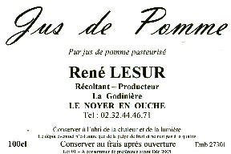

La Ferme de La Godinière
27410
Le Noyer en Ouche
dernière mise à jour de cette page : 03.10.2009
Notre ancienne adresse web :cidre.rene.lesur.club.fr est
devenue obsolète et est
transférée sur
http://pagesperso-orange.fr/lagodiniere27/
En savoir plus sur : Le Jus de Pomme
Le Jus de Pomme

En plus, Boire du Jus de Pomme, c'est faire un bon geste pour la planète...
Notre Jus de Pomme Pasteurisé fera la boisson préférée des enfants
et de tous ceux qui ne prisent pas les boissons fermentées.
-
nb. Voir
info spéciale -
Notre jus de pomme est fabriqué
par nous mêmes, à la ferme, avec des pommes sélectionnées, et selon un mélange
élaboré dans des proportions particulières. Le jus est ensuite
pasteurisé à 80 degrés et mis
en bouteilles à chaud. (Nous n'effectuons pas cette opération chez nous car cela
demande investissement et technicité). Les levures sont tuées par la chaleur et, par conséquent
le jus ne fermente pas, il ne contient pas d'alcool. Le jus de
pomme peut donc être consommé aisément par les enfants et les
personnes qui ne supportent pas les boissons fermentées ou qui ne
consomment aucune boisson alcoolisée. Il est déconseillé aux
personnes diabétiques étant donné qu'il a conservé le sucre de la pomme.
Néanmoins, il peut être consommé
également en cocktails sans alcool bien sûr, mais également dans tous
les autres genres.
En Bouteilles de 100 cl
Retour
Les Produits
ou
Accueil ou
Plan du
site
En Savoir plus sur :
Écrivez nous pour donner votre impression et votre suggestion,
merci.
Ma messagerie est protégée par Avast
Conception et Réalisation : René Lesur
ou page précédente
Pour nous écrire : cliquez